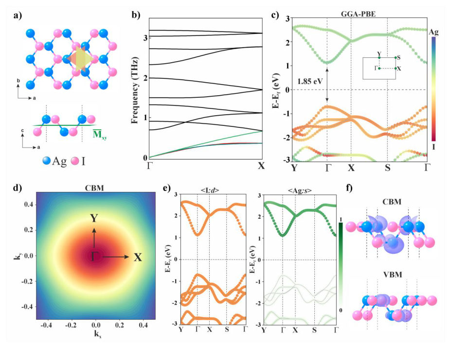
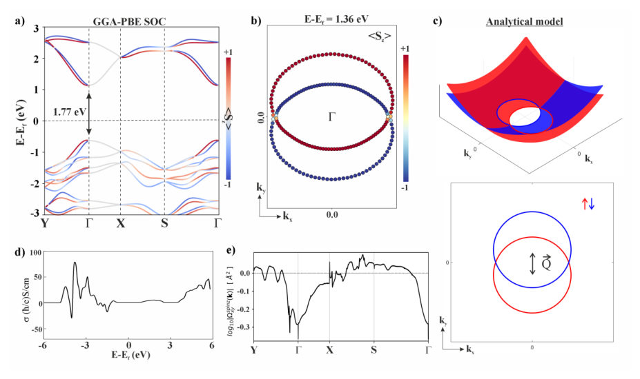

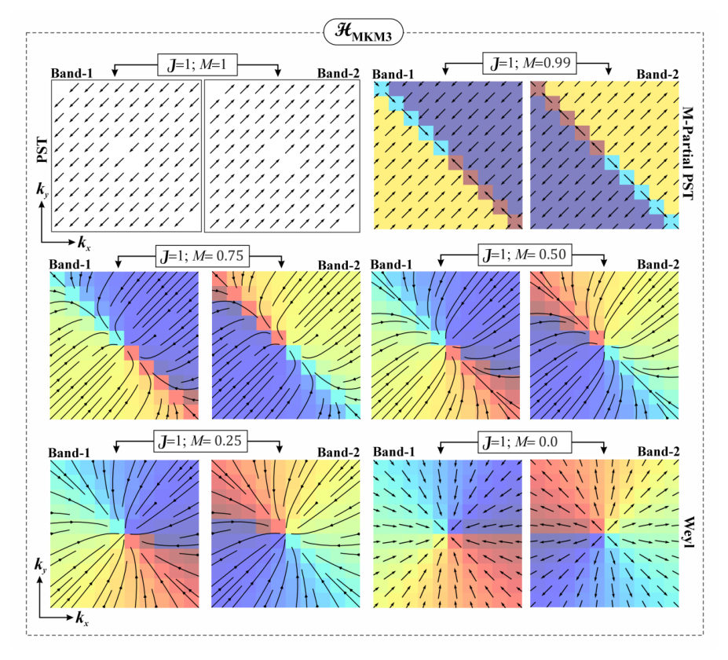
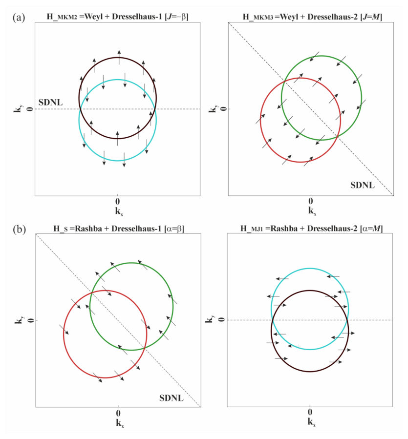
← Index · ← Previous · Next →
Authors: Manish Kumar Mohanta
Type: theory · Category: other · PDF: https://arxiv.org/pdf/2605.02368v1
Analysis basis: full PDF text, analyzed in chunks




Summary. This paper demonstrates that the AgI (110) surface can host a robust, symmetry-protected persistent spin texture, expanding the known materials platform for spintronics from chalcogenides to halides. It shows that these spin textures are highly tunable via electric fields and strain, offering a new way to control spin and orbital transport.
Why it may be interesting. not directly relevant
Main problem. Investigating whether halide semiconductors can host symmetry-protected persistent spin textures (PST) and exploring the tunability of spin-orbital Hall responses via strain and electric fields.
Main result. The AgI (110) surface is found to host a robust PST that is resistant to strain and structural distortion, but can be transitioned to a Rashba-type texture by a vertical electric field.
Method. First-principles DFT calculations using Quantum Espresso and Wannier90, combined with analytical modeling using effective spin-orbit coupled Hamiltonians and the Kubo formula.
Model / system. The (110) surface of gamma-phase Silver Iodide (AgI), a non-centrosymmetric and nonsymmorphic zinc-blende structure, modeled via an effective Hamiltonian capturing anisotropic spin splitting.
Key observables. Spin Hall conductivity (SHC), orbital Hall conductivity (OHC), spin-projected band structure, spin-projected Fermi surface, and momentum offset (Q).
Important parameters / regimes. Bandgap of 1.85 eV, spin-orbit coupling constants (0.3-0.48 eV-Angstrom), biaxial strain (up to 4%), and vertical electric field strength.
Assumptions / limitations. The study assumes the stability of the surface structure and relies on the accuracy of the pseudoDojo library pseudopotentials and the density functional approximation.
Figures summary. Figure 1 shows surface geometry, phonon stability, and electronic band structures; Figure 2 displays spin-projected bands and Fermi surfaces; Figure 6-8 illustrate the modulation of bands and Hall conductivities under strain and electric fields; Figure 9 details multilayer AgI properties.
Paper structure. The paper begins with structural and stability analysis, moves to the identification of the PST and its electronic properties, develops analytical models for the spin-orbit interaction, investigates the effects of external perturbations (strain and electric fields), and concludes with the study of multilayer configurations.
A systematic investigation of the structural, electronic, and spin-orbital transport properties of the AgI (110) surface is presented using first-principles calculations combined with analytical modelling. The non-centrosymmetric and nonsymmorphic nature of the system gives rise to a robust persistent spin texture (PST), characterized by a unidirectional spin configuration and suppressed spin relaxation, enabling an effectively infinite spin lifetime. Unlike previously reported PST materials, which are predominantly based on chalcogen compounds, this work demonstrates that a halide semiconductor can host PST, thereby significantly expanding the materials platform for spintronic applications. The underlying mechanism is captured using an effective spin-orbit coupled Hamiltonian, which reproduces the anisotropic spin splitting and momentum shift observed in the band structure. This work introduces two new analytical models describing PST and compares them with existing models, offering new perspectives on PST arising from spin-orbit interaction. In addition, the system exhibits sizable intrinsic spin Hall conductivity (SHC) and orbital Hall conductivity (OHC), highlighting its potential for efficient charge-to-spin and charge-to-orbital conversion. The PST is found to be robust against biaxial strain, structural distortion, and multilayer formation, while a vertical electric field breaks the symmetry protection and drives a transition to a Rashba-type spin texture. These findings establish AgI (110) as a promising platform for realizing long-lived spin transport and tunable spin-orbit functionalities in the low-dimensional halide systems.
Authors: P. S. Bednyakov, P. V. Yudin, A. K. Tagantsev, J. Hlinka
Type: both · Category: other · PDF: https://arxiv.org/pdf/2605.02407v1
Analysis basis: full PDF text, analyzed in chunks
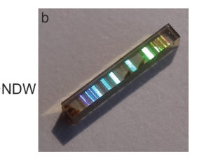
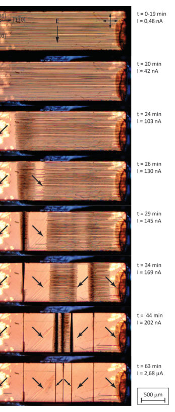
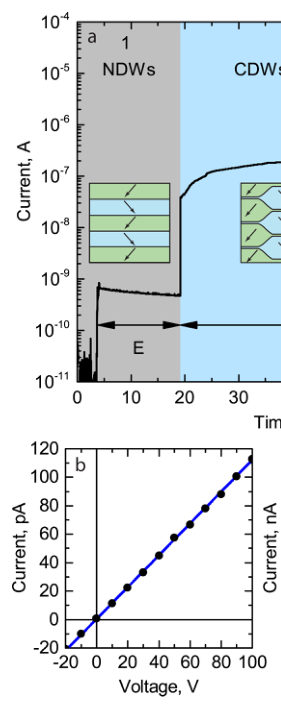
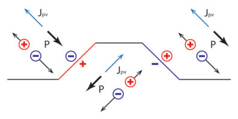
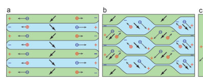
Summary. This paper demonstrates how UV light and an electric field can be used to create conductive channels (charged domain walls) in insulating barium titanate. The researchers show that the bulk photovoltaic effect is the key driver for this structural transformation, offering a way to create reconfigurable electronic and opto-electronic devices.
Why it may be interesting. not directly relevant
Main problem. Understanding the mechanism behind the transformation of neutral domain walls (NDWs) into conductive charged domain walls (CDWs) in barium titanate under UV illumination and an electric field.
Main result. The authors demonstrate that the bulk photovoltaic effect (BPVE) drives the conversion of NDWs to CDWs by providing necessary charge screening at the walls, a process supported by both experimental current measurements and phase-field simulations.
Method. The study combines experimental optical observation and current-voltage measurements on BTO crystals with phase-field simulations using the finite element method (COMSOL) and a Landau-Ginzburg-Devonshire framework.
Model / system. The physical system is barium titanate (BaTiO3) single crystals with an initial structure of neutral domain walls parallel to the (110) plane, subjected to UV illumination and a DC electric field.
Key observables. Domain wall configuration (NDW vs. CDW), photocurrent (J), photovoltaic coefficient, and current-voltage (I-V) characteristics.
Important parameters / regimes. UV wavelength (365 nm), electric field strength (~4 kV/cm), light intensity (~10 mW/cm2), and time scales for CDW formation (10 minutes to 2 hours).
Assumptions / limitations. The simulation assumes homogeneous, through-the-sample generation of photo-carriers and treats light polarization as random and uniform.
Figures summary. Fig 1 shows experimental geometry and the resulting CDW stripes; Fig 2 shows the time-series evolution of domain structures; Fig 4 and 5 illustrate the schematic mechanism and stages of CDW growth; Fig 6 shows phase-field simulation results of domain evolution.
Paper structure. The paper begins with experimental setup and domain engineering, moves to the observation of current increases and domain transitions, proposes a mechanism based on the bulk photovoltaic effect, validates this via phase-field simulations, and concludes with a theoretical derivation of the photovoltaic coefficients.
The optical control of domain structures in ferroelectrics is of great interest. In the present work, we demonstrate the reliable creation of charged domain walls - conductive channels in otherwise insulating barium titanate - by a combined effect of light and electric field. We propose a scenario for the documented process, in which the bulk photovoltaic effect plays the key role, providing charge screening at the walls. Our scenario is supported by the results of phase-field simulations. The results are of interest for future reconfigurable electronic and opto-electronic devices.
Authors: Gabriel T. dos Santos, Roberto dos Reis, Vinayak P. Dravid
Type: both · Category: disordered systems and neural networks · PDF: https://arxiv.org/pdf/2605.01697v1
Analysis basis: full PDF text, analyzed in chunks
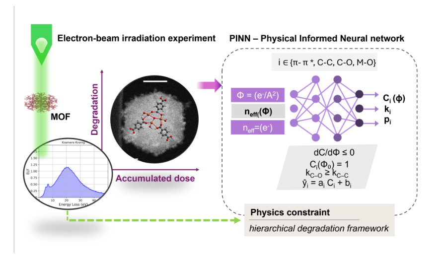
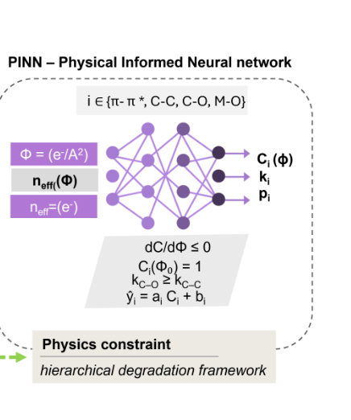
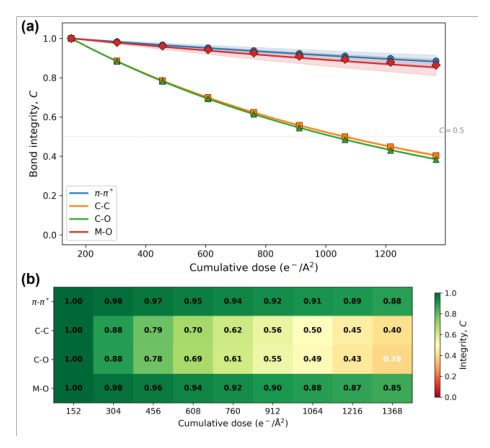
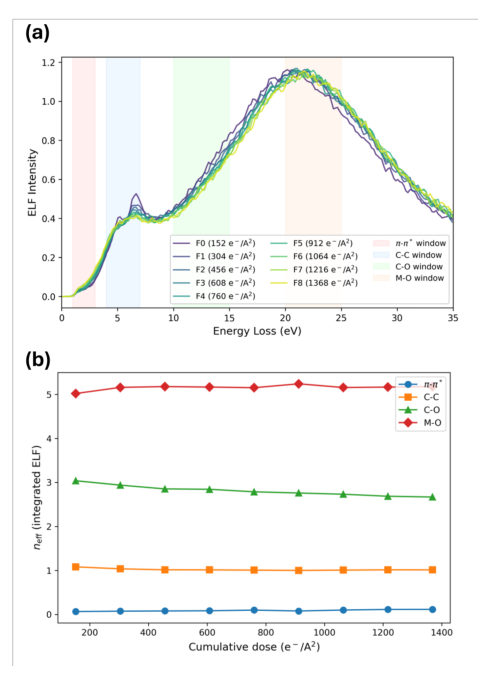
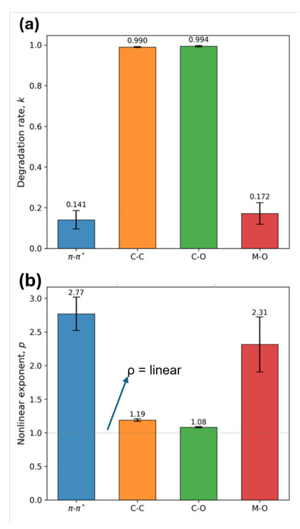
Summary. This paper presents a machine learning framework using Physics-Informed Neural Networks to quantify how electron-beam irradiation degrades the chemical structure of MOFs. By encoding kinetic power-law equations into the neural network, the authors can extract meaningful degradation rates from sparse, noisy spectroscopic data. This approach allows for distinguishing between direct bond breaking and complex spectral redistribution during material damage.
Why it may be interesting. not directly relevant
Main problem. Quantifying the dose-dependent degradation of beam-sensitive Metal-Organic Frameworks (MOFs) during in situ electron microscopy characterization.
Main result. A Physics-Informed Neural Network (PINN) successfully models the kinetic degradation of C-O and C-C bonds in MIL-101(Fe), identifying a half-integrity threshold near 1.0e3 e-/A2 and revealing oscillator-strength redistribution in the pi-pi* window.
Method. The researchers use a Physics-Informed Neural Network (PINN) constrained by a power-law ordinary differential equation, monotonicity, and a hierarchy prior to model spectral evolution from EELS data.
Model / system. The physical system is the Metal-Organic Framework MIL-101(Fe) studied via in situ low-loss Electron Energy-Loss Spectroscopy (EELS) under 300 kV electron-beam irradiation.
Key observables. Window-integrated low-loss spectral areas for pi-pi* (1-3 eV), C-C (4-7 eV), C-O (10-15 eV), and M-O (20-25 eV) energy windows.
Important parameters / regimes. Degradation rate constants (ki), kinetic exponents (pi), and the half-integrity dose threshold (Phi_1/2).
Assumptions / limitations. The descriptors are relative window-integrated areas rather than absolute electron numbers; the model is applied to a very sparse dataset of only nine dose frames.
Figures summary. Figure 1 shows the PINN framework; Figure 2 displays in situ EELS spectra; Figure 3 presents inferred latent integrity trajectories and heatmaps; Figure 4 shows inferred degradation rates and exponents; Supplementary figures show ensemble predictions and ablation studies against unconstrained models.
Paper structure. The paper introduces the problem of beam damage, describes the experimental EELS setup, details the PINN architecture and physics-based loss functions, presents the results of bond-specific degradation, and concludes with an ablation study comparing the PINN to standard neural networks.
Electron-beam irradiation limits atomic-resolution characterization of beam-sensitive hybrid materials, yet quantitative models that connect \textit{in situ} spectroscopy to dose-dependent degradation remain scarce. Here we use a physics-informed neural network (PINN) to model beam-induced spectral evolution in MIL-101(Fe) from an in situ low-loss electron energy-loss spectroscopy (EELS) dose series. Each spectrum is reduced to fixed-window low-loss descriptors, $\tilde n_{\mathrm{eff},j}(Φ)=\int_{\mathcal{W}_j}S(E,Φ)\,dE$, evaluated over nominal $π$--$π^{*}$, C--C, C--O, and M--O windows. These descriptors are relative window-integrated low-loss spectral areas, not absolute f-sum-rule effective electron numbers. For each spectral channel, a latent integrity variable $C_i(Φ)$ obeys the same uncoupled power-law degradation equation in normalized dose space, $dC_i/dφ=-k_i C_i^{p_i}$, regularized by monotonicity, boundedness, and a single hierarchy prior $k_{\mathrm{C\text{-}O}}\geq k_{\mathrm{C\text{-}C}}$. Applied to nine dose frames spanning 152--1368~e$^-$/Å$^2$, the ensemble PINN identifies C--O and C--C as the most strongly dose-sensitive linker-associated channels, with half-integrity thresholds of approximately $1.0\times10^3$~e$^-$/Å$^2$. The 1--3~eV $π$--$π^{*}$-labelled window increases with dose and is therefore interpreted as a mixed low-energy response, likely involving oscillator-strength redistribution rather than direct monotonic loss of a single bond population. The framework provides a dose-dependent, spectroscopy constrained description of MOF degradation while also defining the limits of what fixed-window low-loss EELS can assign without independent chemical-state validation.
Authors: Le-Ye Zhu, Xi Zhang, Yun-Peng Wang, Jieheng Shi, Junwei Zhang, Shixuan Du, Yu-Yang Zhang
Type: theory · Category: disordered systems and neural networks · PDF: https://arxiv.org/pdf/2605.01881v1
Analysis basis: full PDF text, analyzed in chunks
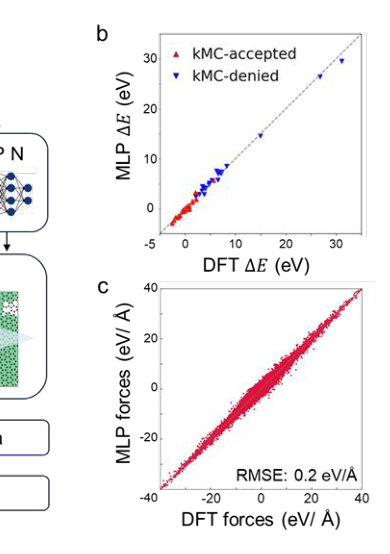
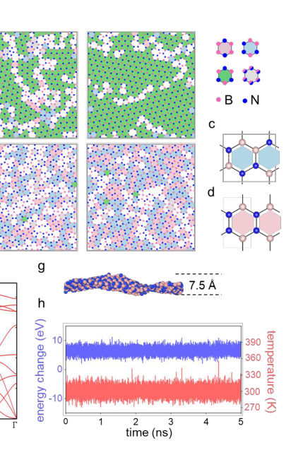

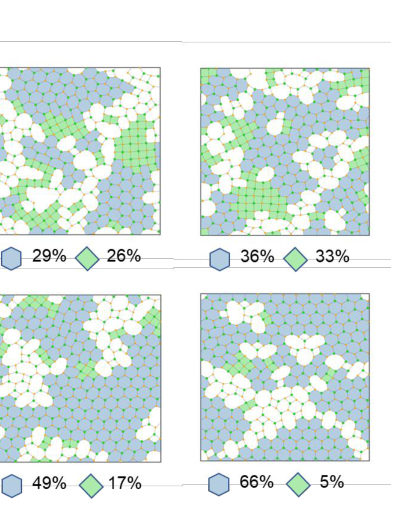
Summary. This paper introduces a new model for 2D amorphous materials, suggesting they are composed of stable, distinct crystalline motifs embedded in a random network rather than being purely disordered. Using machine learning potentials and kinetic Monte Carlo, the authors demonstrate that this polymorphic crystallite model is a general and accurate way to describe various multi-element monolayers.
Why it may be interesting. not directly relevant
Main problem. The challenge of accurately modeling the atomic-scale structure and stability of monolayer amorphous materials, which lack long-range order and involve complex, competing structural motifs.
Main result. The authors propose a 'polymorphic crystallite model' where amorphous 2D materials consist of stable, randomly distributed crystallites (e.g., o-B2N2 and o-B4N4 in maBN) within a continuous random network, a model validated across maBN, maLiCl, and maBCN systems.
Method. An energy-driven kinetic Monte Carlo (EDKMC) framework combined with an active-learning-based machine learning potential (MLP) trained from first-principles DFT energies.
Model / system. The study focuses on multi-element 2D amorphous monolayers, specifically amorphous boron nitride (maBN), lithium chloride (maLiCl), and boron carbon nitride (maBCN), modeled via a polymorphic crystallite paradigm.
Key observables. Degree of disorder (DOD), ring statistics (5-, 6-, and 7-membered rings), density of states (DOS), and atomic forces/energy differences.
Important parameters / regimes. Simulation temperature (reference parameter), kBT (0.5 eV to 3 eV), and the degree of disorder (DOD).
Assumptions / limitations. The EDKMC approach assumes the melting process must be avoided to prevent irreversible transitions to 3D structures.
Figures summary. Figure 1 shows the EDKMC workflow and MLP accuracy validation; Figure 2 compares atomic configurations of different models and identifies specific structural motifs; Supplementary figures show convergence, stability, and electronic properties.
Paper structure. Introduction of the modeling challenge; description of the EDKMC active-learning framework and MLP training; application to maBN to propose the polymorphic crystallite model; validation of the model in maLiCl and maBCN; discussion of stability and electronic properties.
Modeling the atomic structure of amorphous materials has long been a critical challenge in materials science. Recent advances in monolayer amorphous materials enable direct observation of their atomic structures, paving the way for a better understanding of their atomic-scale models. Here, we investigate amorphous multielement monolayers using machine learning potential from first-principles total energies via energy-driven kinetic Monte Carlo based active-learning framework. A polymorphic crystallite model is proposed to describe the atomic configuration of monolayer amorphous boron nitride, as it consists of coexisting crystallite of $o-B_2N_2$ and $o-B_4N_4$ structural motifs. Generality of the polymorphic crystallite model is further validated in two other multielement monolayer amorphous systems. Monolayer amorphous LiCl shows coexisting hexagonal and tetragonal crystallites, while monolayer amorphous BCN contains a combination of graphene-like, h-BN-like, and borophene-like crystallites. These findings expand the classical picture of amorphous structure models and offer new insight into the microscopic structure of amorphous materials.
Authors: Michał A. Stróżyk, Jong-Dae Hong, JaeYong Kim, Iwona Jóźwik, Ryszard Diduszko, Jerzy Zagórski, Witold Chromiński, Kinga Suchorab, Katarzyna Ciporska, Marcin Brykała, Jacek Jagielski
Type: experiment · Category: other · PDF: https://arxiv.org/pdf/2605.02531v1
Analysis basis: full PDF text, analyzed in chunks
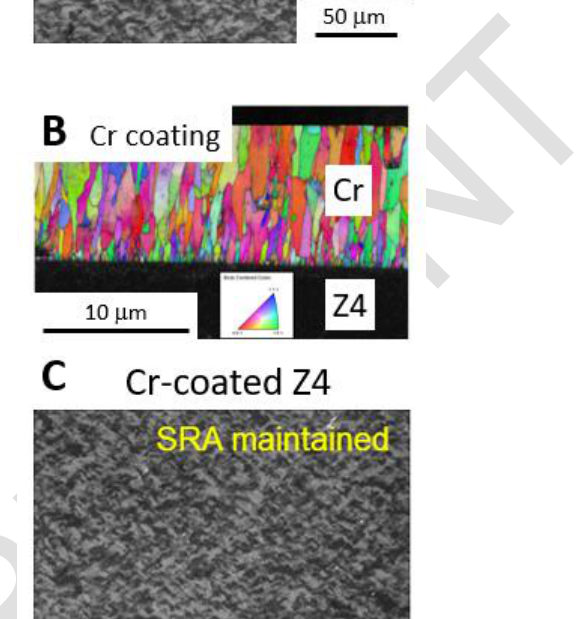
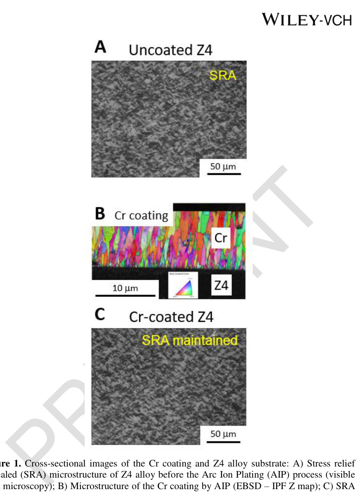
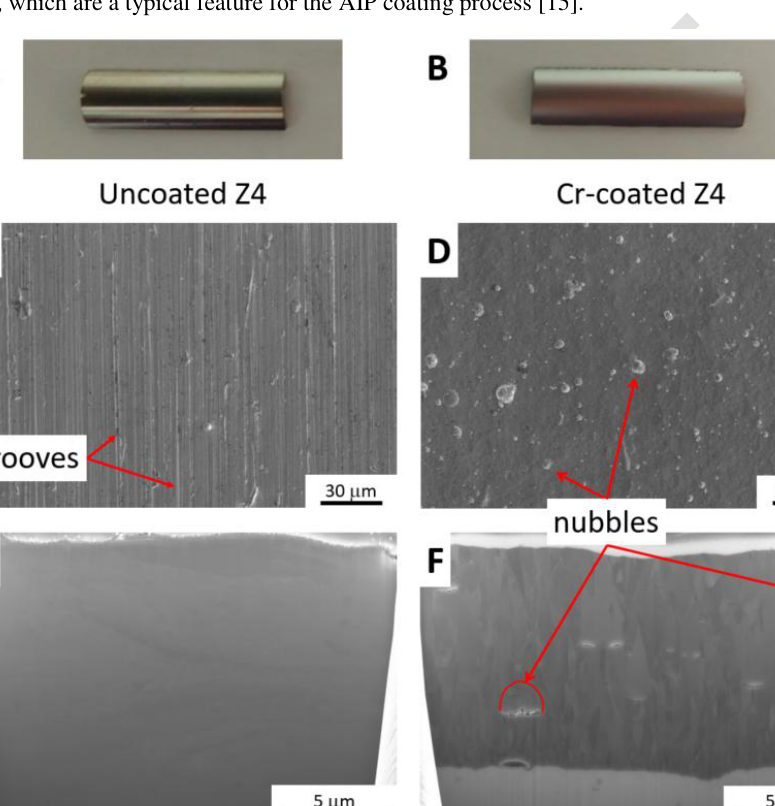
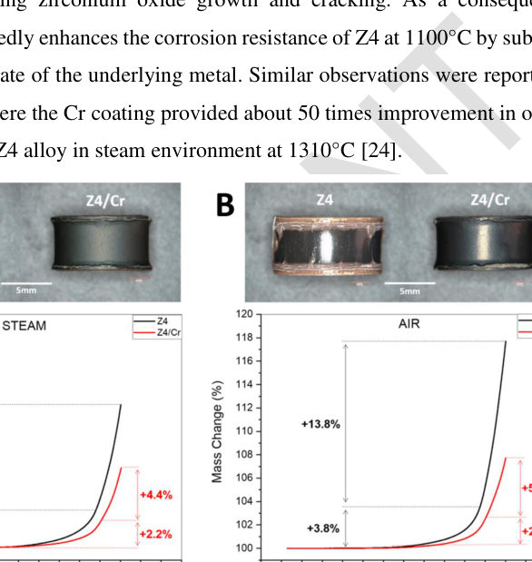
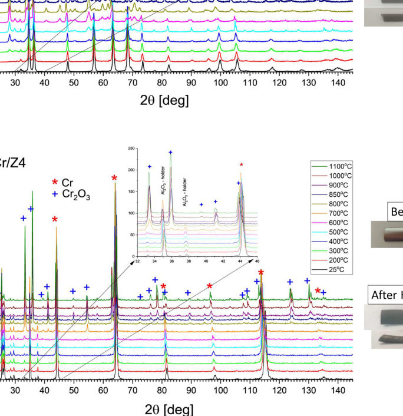
Summary. This study investigates Chromium-coated Zircaloy-4 as a potential material for accident-tolerant nuclear fuel cladding. The researchers found that the Cr coating effectively delays oxidation at high temperatures, though thermal excursions cause complex interfacial changes like Fe segregation and nano-bubble formation.
Why it may be interesting. not directly relevant
Main problem. Evaluating the effectiveness of Chromium (Cr) coatings on Zircaloy-4 cladding to prevent oxidation and hydrogen release during high-temperature nuclear accidents.
Main result. The Cr coating significantly reduces mass gain and delays oxide formation (above 600C vs 200C for uncoated), though it leads to Fe segregation and the formation of a Zr(Fe,Cr)2 Laves phase at the interface.
Method. High-temperature X-ray diffraction (HT-XRD), thermogravimetric analysis (TGA), SEM, and TEM were used to study phase evolution and oxidation kinetics up to 1100C.
Model / system. A Zircaloy-4 (Z4) cladding substrate with a 10 +/- 2 micrometer Chromium (Cr) layer deposited via Arc Ion Plating (AIP).
Key observables. Oxidation thresholds, mass gain, lattice constants, thermal expansion coefficients, and microstructural features like nano-bubbles and Laves phase formation.
Important parameters / regimes. Temperature range from RT to 1100C, coating thickness of ~10 micrometers, and oxidation environments (air, steam, and vacuum).
Assumptions / limitations. The study is described as a preliminary structural study; long-term stability in complex reactor environments is not fully addressed.
Figures summary. Figure 1 compares Z4 microstructure before/after coating and shows Cr grain structure; Figure 2 shows surface morphology and cross-sections of uncoated vs coated samples; Figure 3 presents TGA mass gain curves; Figure 6 and 7 show TEM/SEM of phase evolution and interface features.
Paper structure. The paper introduces the problem of ATF cladding, describes the AIP deposition process, presents structural characterization of the coating, details high-temperature oxidation and phase transformation results, and concludes with interface analysis.
Following the Fukushima Daiichi disaster, an increasing number of studies concentrate on the development of Accident Tolerant Fuel (ATF) cladding materials for nuclear fuel, aiming to prevent the oxidation of zirconium during incidents such as Loss of Coolant Accident (LOCA) and to effectively lower the amount of heat and hydrogen released during emergency core cooling (ECC). Zirconium alloy cladding with a protective chromium (Cr) coating is considered one of the promising candidates, largely due to its relatively short timeline for deployment in nuclear power plants. In this study, Cr-coated and uncoated Zircaloy-4 claddings were evaluated using high temperature X-ray diffraction (HT-XRD) in vacuum over a temperature range from RT to 1100oC. The temperatures corresponding to the formation of oxide phases are >200oC and >600oC for the uncoated and Cr-coated samples, respectively. SEM and TEM characterisation of the sub-surface in Cr-coated specimen after HT-XRD revealed Fe segregation, formation of Zr(Fe,Cr)2 Laves phase and nano-bubbles at the former Cr / Z4 interface.
Authors: Agnieszka E. Lekawa-Raus, John S. Bulmer, Teresa Kulka, Magdalena Marganska, Nick Papior, Dwight G. Rickel, Fedor F. Balakirev, Jacek A. Majewski, Krzysztof Koziol, Karolina Z. Milowska
Type: both · Category: disordered systems and neural networks · PDF: https://arxiv.org/pdf/2605.02295v1
Analysis basis: abstract only; PDF text extraction failed or PDF unavailable
Summary. This paper provides a new atomistic framework to explain how quantum interference at junctions governs the macroscopic electrical properties of carbon nanotube networks. By combining theory with high-field measurements, the authors show that transport is driven by junction-level physics rather than simple defects or doping. This offers a way to bridge the gap between nanoscale electronic properties and device-scale performance.
Why it may be interesting. not directly relevant
Main problem. The microscopic principles governing charge transport in macroscopic assemblies of 1D and 2D materials remain unresolved, as current phenomenological models fail to connect electronic structure to macroscopic magnetotransport.
Main result. The study demonstrates that macroscopic transport in disordered low-dimensional networks is governed by junction-level quantum interference, where positive magnetoresistance is controlled by junction overlap length and negative magnetoresistance arises from lattice-mismatched heterojunctions.
Method. The authors develop a unified atomistic framework linking quantum-coherent transport, thermal disorder, and magnetic-field effects, which is then validated against ultrahigh-field magnetotransport measurements up to 60 T.
Model / system. The physical system consists of macroscopic assemblies of carbon nanotube fibres, treated as disordered networks of one- and two-dimensional materials.
Key observables. Magnetoresistance (positive and negative), conductivity, and junction transport properties.
Important parameters / regimes. Magnetic field strength (up to 60 T), temperature range, junction overlap length, and lattice mismatch.
Paper structure. The paper introduces the problem of transport in macroscopic 1D/2D networks, presents a new atomistic theoretical framework, describes ultrahigh-field experimental measurements on carbon nanotube fibres, and concludes with a statistical analysis of the data to identify the origin of magnetoresistance.
Macroscopic assemblies of one- and two-dimensional materials promise to translate nanoscale electronic properties into device-scale performance, yet the microscopic principles governing charge transport in such networks remain unresolved. In these systems, conductivity is often interpreted using phenomenological models that do not explicitly connect electronic structure to macroscopic magnetotransport. Here we develop a unified atomistic framework that links quantum-coherent transport, thermal disorder and magnetic-field effects, and combine it with ultrahigh-field magnetotransport measurements up to 60 T over a broad temperature range on carbon nanotube fibres. We show that positive magnetoresistance is controlled by junction overlap length, whereas negative magnetoresistance arises predominantly from lattice-mismatched heterojunctions rather than weak localisation alone. Statistical analysis of a large-scale numerical dataset reveals that the experimentally observed positive quadratic magnetoresistance originates from junction transport. These results show that macroscopic transport in disordered low-dimensional networks is governed primarily by junction-level quantum interference rather than solely by defects or doping.
Authors: Arash Yavari, Aditya Kumar
Type: theory · Category: other · PDF: https://arxiv.org/pdf/2605.01156v1
Analysis basis: full PDF text, analyzed in chunks
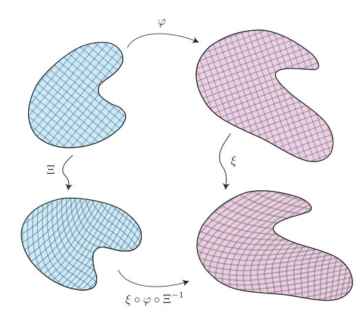
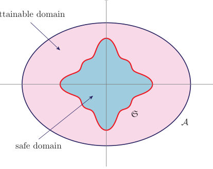
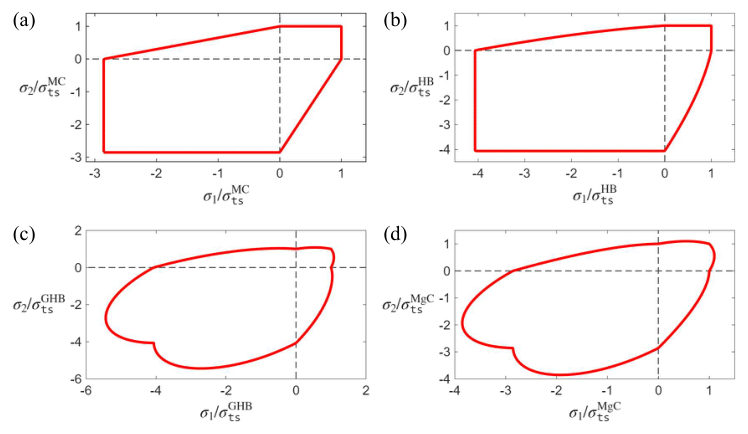
Summary. This paper establishes a rigorous mathematical framework for defining material strength in brittle solids undergoing large deformations. It shows that for the theory to be physically consistent (covariant), strength must be a function of both stress and strain rather than stress alone. The work provides a unified description that encompasses classical linear elasticity, anisotropy, and the effects of residual stresses.
Why it may be interesting. not directly relevant
Main problem. The lack of a mathematically consistent and representation-independent definition of material strength in the framework of finite elasticity, particularly regarding how strength depends on both stress and strain.
Main result. The authors prove that a covariant strength function must depend on both stress and strain measures to ensure spatial covariance, and they demonstrate that for isotropic solids, the safe domain is star-shaped under a proportional-reduction hypothesis.
Method. A geometric and symmetry-theoretic approach using rational mechanics, finite elasticity, and invariant theory under spatial diffeomorphisms.
Model / system. Brittle solids (ranging from glass/ceramics to elastomers) modeled within the framework of nonlinear finite elasticity, including isotropic, anisotropic, and anelastic regimes.
Key observables. Strength function, strength hypersurface, and the safe domain.
Important parameters / regimes. Stress measures (Cauchy, Piola-Kirchhoff), strain measures, material symmetry groups, and eigenstrains.
Assumptions / limitations. The theory assumes a hyperelastic framework, focuses on strength-based criteria, and assumes that sufficiently large stresses are inadmissible.
Figures summary. A figure showing the eigenvalues of the Biot stress for isotropic solids.
Paper structure. The paper begins by defining the problem of strength in finite elasticity, moves to a covariant formulation using stress and strain pairs, analyzes the geometric properties of the strength hypersurface and safe domain, extends the theory to anisotropic and anelastic solids, and finally shows the reduction to classical linear elastic criteria in the small-strain limit.
Material strength is a classical concept with renewed importance in fracture mechanics, particularly in crack nucleation in brittle solids. We formulate material strength in finite elasticity and examine its geometric, constitutive, and symmetry-theoretic foundations. Spatial covariance requires a strength function to depend on both stress and the corresponding strain measure, so that strength is governed by the pair (stress,strain), not stress alone, and only then can representations based on different stress measures be consistently related, with classical stress-based criteria recovered as a special case. We analyze covariance under spatial diffeomorphisms and relate formulations based on the first Piola--Kirchhoff, second Piola--Kirchhoff, and Cauchy stresses. For stress-based criteria, we define the strength hypersurface as a subset of the constitutively admissible stress manifold and study the associated safe domain. Under standard regularity assumptions and the requirement that sufficiently large stresses are inadmissible, the strength surface is a smooth compact hypersurface of this manifold. For isotropic solids, we show that the safe domain is star-shaped under a proportional-reduction hypothesis. We extend the formulation to anelastic brittle solids, showing that residual stresses and eigenstrains modify the strength surface through the material metric, and discuss anisotropic strength via material symmetry. Finally, in the small-strain limit, the theory reduces to classical stress-based criteria.
Authors: Esmée Berger, Narjes Khosravian, Ferry Anggoro Ardy Nugroho, Joakim Löfgren, Christoph Langhammer, Paul Erhart
Type: both · Category: statistical mechanics · PDF: https://arxiv.org/pdf/2605.01458v1
Analysis basis: full PDF text, analyzed in chunks
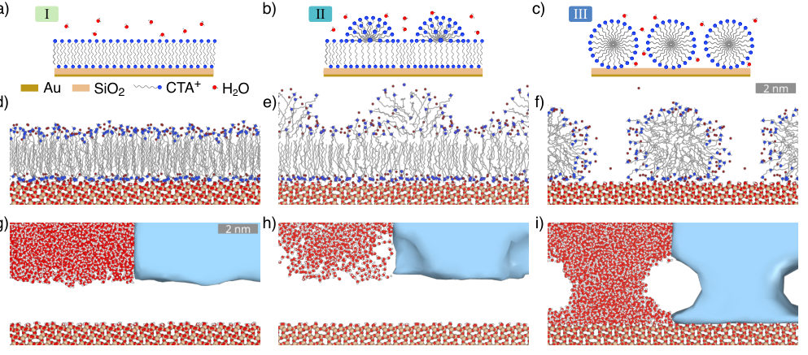
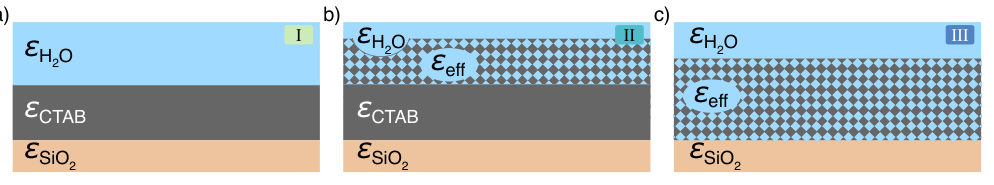
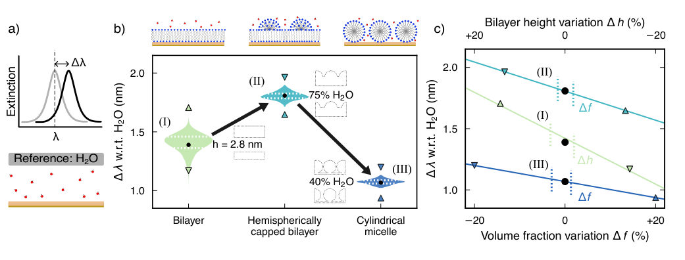
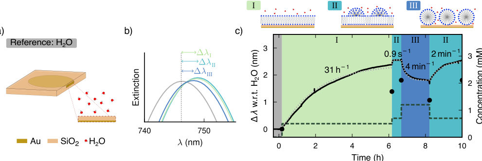
Summary. This paper develops a multiscale method to monitor surfactant phase transitions in real-time using plasmonic sensing. By linking molecular-scale hydration to macroscopic optical shifts, the researchers can identify specific interfacial morphologies and their formation kinetics. This provides a robust, label-free way to study complex soft-matter interfaces.
Why it may be interesting. not directly relevant
Main problem. The difficulty of resolving the structural morphologies and transition kinetics of surfactant phases at solid-liquid interfaces in situ.
Main result. The establishment of a multiscale framework that uses plasmonic sensing to identify surfactant phases via dielectric fingerprints, specifically identifying a spectral shift reversal during the transition to a water-permeable phase.
Method. A multiscale approach combining atomistic Molecular Dynamics (MD) for morphology, Density Functional Theory (DFT) for dielectric properties, and Finite-Difference Time-Domain (FDTD) simulations for optical response, validated by in-situ LSPR sensing.
Model / system. The system consists of CTAB surfactant adsorption on a silica-coated gold nanodisk array in an aqueous environment, modeling three distinct phases: an impermeable bilayer, a capped bilayer, and a permeable cylindrical phase.
Key observables. Localized Surface Plasmon Resonance (LSPR) extinction peak shifts (delta lambda), effective permittivity, and transition rate constants.
Important parameters / regimes. Surfactant concentration, water volume fraction, layer height, and apparent rate constants (kappa_app).
Assumptions / limitations. The continuum model assumes an effective-medium approximation for the surfactant layers based on water volume fractions and molecular packing.
Figures summary. Fig 1 shows CTAB phase schematics and MD snapshots of molecular/water distribution; Fig 2 shows continuum models for FDTD; Fig 3 shows predicted LSPR shifts and sensitivity analysis; Fig 4 shows experimental LSPR peak shifts and kinetic relaxation curves.
Paper structure. The paper introduces the problem of interfacial sensing, describes the multiscale simulation framework (MD, DFT, FDTD), presents the experimental LSPR platform, details the results of phase identification and kinetic extraction, and concludes with the generalizability of the approach.
Surfactant self-assembly at solid-liquid interfaces governs interfacial stability, transport, and reactivity across many technologies, yet resolving interfacial surfactant phases and their transition kinetics in situ remains challenging. Here, we establish an atomistically grounded plasmonic framework that quantitatively maps interfacial surfactant phases and phase transitions onto optical signatures. Distinct morphologies differ in packing and hydration, modifying the effective permittivity within the optical near field and producing surfactant phase-specific plasmonic extinction peak shifts. Using cetyltrimethylammonium bromide on silica as a prototypical surfactant-surface system, we combine atomistic simulations, electronic-structure calculations, and continuum electrodynamics to translate molecular morphologies into predicted spectral shifts for literature-reported surface phases. We experimentally confirm the predicted ordering and magnitude of steady-state peak shifts during stepwise concentration changes, and extract transition kinetics from exponential relaxations of the time-resolved peak shift. A key mechanistic signature is reversal of the spectral shift direction upon transition from an impermeable bilayer to a water-accessible, channel-containing phase, consistent with hydration-driven reduction of the local effective permittivity. Because the approach relies on dielectric contrast in the plasmonic near field and works through a dielectric overlayer, it provides a broadly applicable route for real-time identification of interfacial surfactant phases and their kinetics in aqueous conditions.
Authors: Xiuli Zhang, Peng Jiang, Yurui Ma, Xiaodong Zhou, Linlin Liu, Hong-Mei Huang, San-Dong Guo, Tengfei Cao, Yan-Ling Li
Type: both · Category: strongly correlated electrons · PDF: https://arxiv.org/pdf/2605.01872v1
Analysis basis: full PDF text, analyzed in chunks
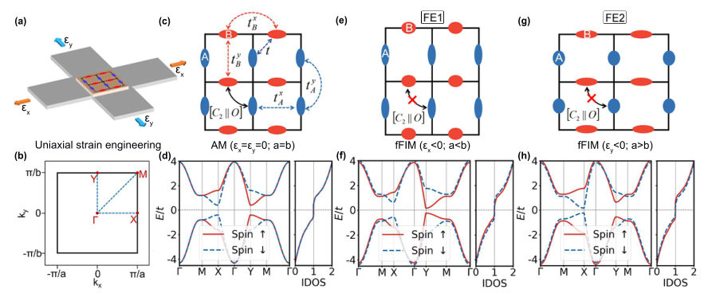
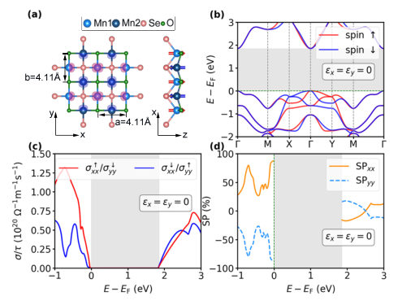
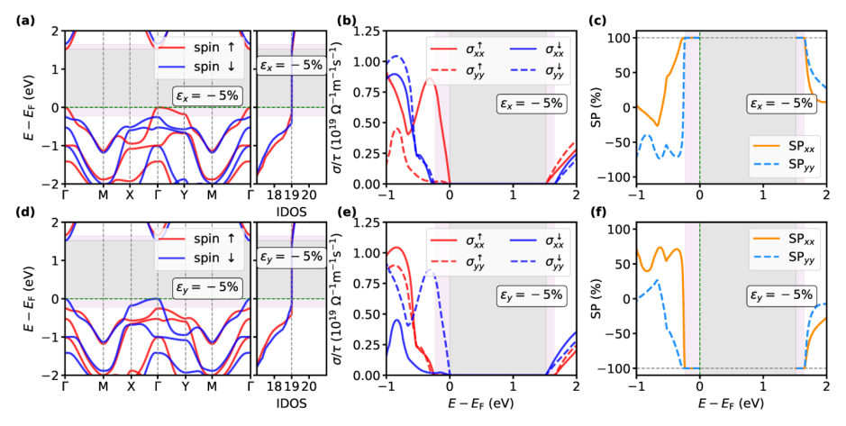
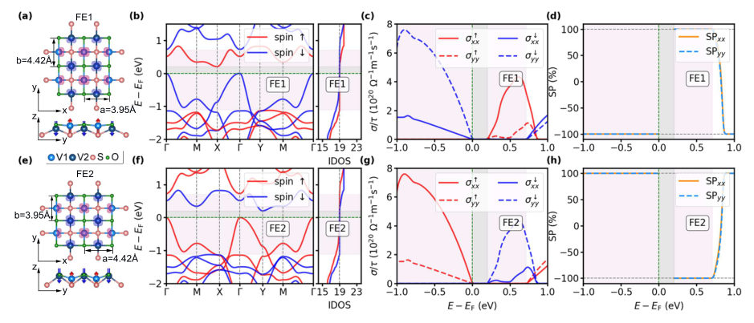
Summary. This paper demonstrates that applying uniaxial strain to 2D altermagnets can break magnetic symmetries to induce a fully spin-polarized ferrimagnetic state. By controlling the direction of the strain, researchers can reversibly switch the spin polarization, providing a new framework for developing efficient, strain-controlled spintronic devices.
Why it may be interesting. not directly relevant
Main problem. The difficulty of achieving controllable and reversible full spin polarization in symmetry-compensated magnets, such as altermagnets, where crystalline symmetries enforce spin degeneracy.
Main result. Uniaxial strain can break the symmetry between magnetic sublattices, driving a transition from an altermagnetic state to a fully compensated ferrimagnetic state that enables 100% spin polarization and reversible spin switching.
Method. The study uses symmetry and spin-group analysis, a minimal tight-binding model, first-principles DFT calculations, Boltzmann transport theory, and ab initio molecular dynamics.
Model / system. The study focuses on 2D altermagnetic (AM) and ferroelastic fully compensated ferrimagnetic (fFIM) systems, specifically identifying monolayer Mn2SeO and V2SO as candidate materials.
Key observables. Spin polarization percentage, spin-polarized band structure, integrated density of states (IDOS), spin-dependent electronic occupation, and spin-resolved longitudinal conductivities.
Important parameters / regimes. Uniaxial strain (compressive/tensile), strain direction (orthogonal x and y), and the transition from AM to fFIM states.
Assumptions / limitations. The mechanism is assumed to be general for 2D systems where uniaxial strain can induce sublattice inequivalence.
Figures summary. Fig 1 shows the illustration of strain engineering and Brillouin zones; Fig 2 displays the atomic structure, spin density, and spin-polarized transport for Mn2SeO; Fig 3 demonstrates the reversal of spin polarization in Mn2SeO under different strain directions; Fig 4 compares the ferroelastic configurations of V2SO.
Paper structure. The paper introduces the problem of spin degeneracy in compensated magnets, presents a symmetry-based mechanism using a tight-binding model, validates the mechanism with first-principles calculations on Mn2SeO and V2SO, and concludes with the implications for spintronic applications.
Achieving controllable spin polarization and its reversal in symmetry-compensated magnets. Here we demonstrate, using symmetry analysis and a minimal tight-binding model, that uniaxial strain removes these constraints by inducing inequivalence between magnetic sublattices in two-dimensional (2D) system, driving an altermagnetic (AM) state into a fully compensated ferrimagnetic (fFIM) state and enabling fully spin polarization. Furthermore, strain along orthogonal directions gives rise to two energetically degenerate fFIM states with opposite spin polarization, enabling reversible spin switching. More importantly, the two symmetry-related fFIM states can be regarded as distinct ferroelastic variants, suggesting that this model or mechanism can be extended to ferroelastic fFIM systems. The generality of this mechanism is confirmed by combining spin-group analysis, first-principles calculations, and Boltzmann transport theory in representative candidates, including AM Mn$_2$SeO and ferroelastic fFIM V$_2$SO. Our results reveal a universal symmetry-driven framework for strain-controlled and -reversible fully spin-polarized transport and identify strain-engineered AM and ferroelastic fFIM systems as a promising platform for volatile and nonvolatile spintronic applications.
Authors: Gota Sato, Yasushi Nagato, Seiji Higashitani
Type: theory · Category: strongly correlated electrons · PDF: https://arxiv.org/pdf/2605.02423v1
Analysis basis: full PDF text, analyzed in chunks
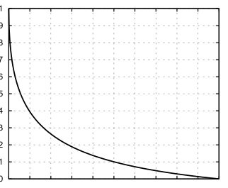
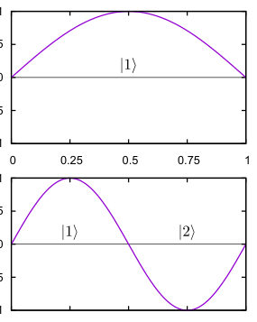
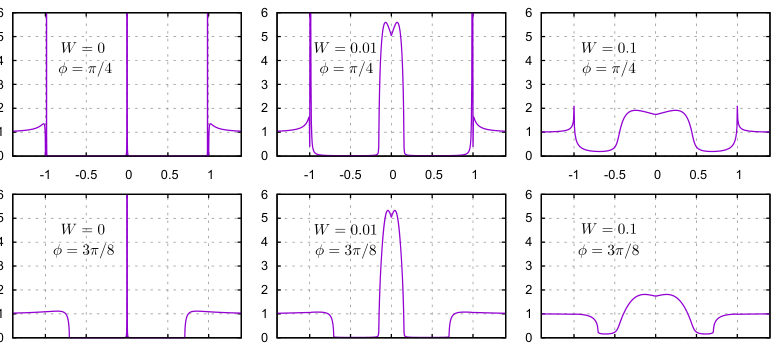
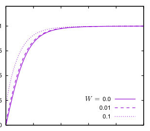
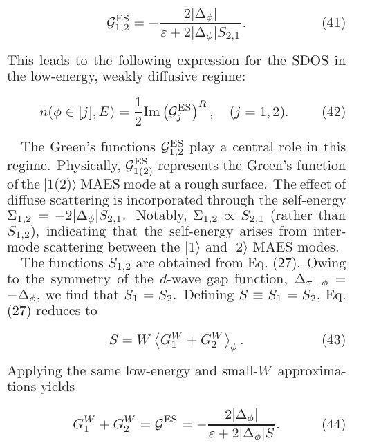
Summary. This paper explains why the zero-energy peak in p-wave superconductors remains sharp despite surface roughness, unlike in d-wave superconductors where it broadens into a V-shape. The difference is attributed to the fact that d-wave states involve scattering between two different edge modes, whereas p-wave states involve only a single mode.
Why it may be interesting. not directly relevant
Main problem. The paper investigates the physical origin of why Midgap Andreev Edge States (MAES) in p-wave superconductors are robust against surface roughness, while those in d-wave superconductors undergo significant broadening and develop a V-shaped density of states.
Main result. The authors show that d-wave fragility arises from inter-mode scattering between two distinct MAES modes, whereas p-wave robustness is due to the presence of only a single MAES mode, which prevents mode-mixing broadening.
Method. The study uses the quasiclassical theory of superconductivity via the Eilenberger equation and a random S-matrix model to simulate diffuse surface scattering.
Model / system. The system consists of 2D nonchiral p-wave and d-wave superconductors with a surface at y=0, modeled using a uniform gap approximation and a random S-matrix to represent varying degrees of surface roughness.
Key observables. Surface Density of States (SDOS) and the midgap peak at the Fermi energy.
Important parameters / regimes. Roughness parameter W (ranging from 0 for specular to 1 for diffuse), specular reflection probability R, and the gap symmetry index m.
Assumptions / limitations. The Fermi surface is assumed to be isotropic (circular), the surface is macroscopically flat, and the analysis focuses on the nonchiral, flat-band regime.
Figures summary. Figure 1 relates roughness W to reflection probability R; Figure 2 shows the angular dependence of the gap sign; Figure 3 shows numerical SDOS for d-wave; Figure 7 shows the increase of scattering parameters with W in p-wave states.
Paper structure. The paper introduces the problem of MAES sensitivity to roughness, establishes a mathematical framework using Eilenberger equations and S-matrix theory, performs a comparative analysis of p-wave and d-wave modes, and concludes by identifying inter-mode scattering as the mechanism for d-wave broadening.
We revisit the effect of surface roughness on midgap Andreev edge states (MAES) in p- and d- wave superconductors. For a perfectly specular surface, MAES form a flat band at the Fermi energy, which manifests as a sharp midgap peak in the surface density of states (SDOS). Previous theoretical studies have shown that MAES in p- and d-wave superconductors respond markedly differently to surface roughness. In the d-wave state, diffuse surface scattering significantly broadens the midgap peak in the SDOS, accompanied by the emergence of a V-shaped structure centered at the Fermi energy. In contrast, the midgap peak in the p-wave state remains robust against diffuse scattering. In this work, we clarify the physical origin of this contrasting behavior. A key aspect of our analysis is that the flat band in the d-wave state consists of two distinct types of MAES modes. We show that inter-mode diffuse scattering leads to substantial broadening of the midgap peak and to the formation of the V-shaped structure. By contrast, the robustness of MAES in the p-wave state arises from the presence of a single MAES mode in the flat band. These results provide new insight into the response of MAES to surface roughness.
Authors: L. M. Sandratskii, K. Carva, V. M. Silkin
Type: theory · Category: strongly correlated electrons · PDF: https://arxiv.org/pdf/2605.01780v1
Analysis basis: full PDF text, analyzed in chunks
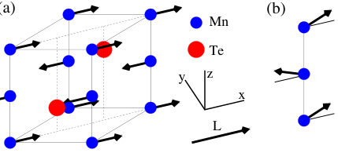
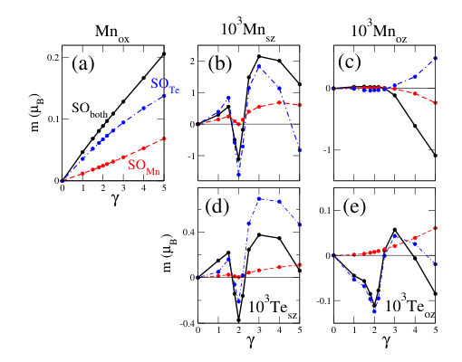
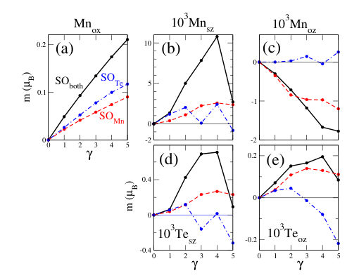
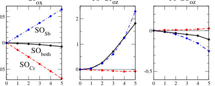
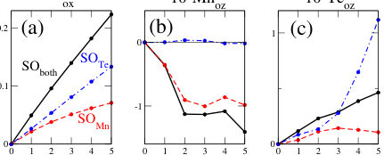
Summary. This paper explores how spin-orbit coupling induces weak ferromagnetism and complex 3D magnetic structures in altermagnets like MnTe. It shows that the relativistic splitting of electron states and the formation of avoided crossings are central to the nonmonotonous behavior of induced magnetic moments. The work highlights the critical role of metal-ligand hybridization in defining altermagnetic properties.
Why it may be interesting. not directly relevant
Main problem. Investigating how spin-orbit coupling (SOC) drives relativistic effects in altermagnets, specifically the interplay between weak spin/orbital ferromagnetism and the relativistic splitting of electron states.
Main result. The study reveals a nonmonotonous dependence of the weak ferromagnetic (WFM) moment on SOC strength and demonstrates that SOC transforms collinear spin-MSES into complex 3D noncollinear magnetic structures through avoided crossings.
Method. Relativistic Density Functional Theory (DFT) using the Augmented Spherical Waves (ASW) method, incorporating LDA, GGA, and LDA+U, combined with symmetry analysis based on spin-space groups.
Model / system. The prototypical altermagnet MnTe (NiAs crystal lattice) and CrSb, focusing on the transition from nonrelativistic to relativistic regimes.
Key observables. Spin and orbital atomic magnetic moments, weak ferromagnetic (WFM) moments, and the Magnetic Structure of Electron States (MSES).
Important parameters / regimes. SOC strength (scaled by gamma), Néel vector orientation, Hubbard U parameter, and metal-ligand hybridization.
Assumptions / limitations. The local atomic z-axis is assumed to be parallel to the direction of the atomic spin moment in the SOC operator; use of the quasisymmetry approximation to decouple spin and orbital components.
Figures summary. Figure 1 shows the MnTe unit cell and magnetic canting; Figures 2-6 illustrate the dependence of spin/orbital moments on SOC strength; Figures 10-12 and 17-20 show the evolution of MSES and band structure features like avoided crossings.
Paper structure. The paper progresses from an atomistic analysis of magnetic structures and WFM to an electronic-level study of electron state magnetic structures (MSES), utilizing symmetry hierarchies (NR to QS to Relativistic) to explain the emergence of complex 3D magnetism.
The aim of the paper is to contribute to reaching a deeper understanding of the formation of relativistic effects in altermagnets. The focus of the paper is on the phenomena of weak ferromagnetism (WFM) and relativistic DFT calculations combined with the symmetry analysis on the basis of spin space groups. The consideration is performed on two different levels. On the first level, the atomistic magnetic structure of weak ferromagnetic state is calculated. Both spin and orbital atomic moments are taken into account. We study the dependence of the WFM moment on the strength of the SOC and obtain a peculiar nonmonotonous type of dependence. An interesting result is obtained in quasisymmetry (QS) calculation where only the component of the SOC collinear to the Néel vector is taken into account. In QS calculation the spin WFM is absent while the orbital WFM is present. This reveals a principal difference in the formation of the spin and orbital magnetic moments. On the second level, the study is focused on the properties of individual electron states. We introduce the notion of the magnetic structure of the electron state (MSES). It is shown how the collinear spin-MSESs of both metal and ligand atoms and compensated orbital-MSES of the ligand obtained in the nonrelativiatic calculation transform into complex noncollinear 3D MSESs of both spin and orbital nature. An important role in the formation of MSESs is played by the relativistic splitting of the accidental spin degeneracies at general {\bf k} points filling the volume of the Brillouin zone. The formation of the regions of avoided crossings in the relativistic band structure is related to the nonmonotonous behavior of the WFM moment. The importance of the metal-ligand hybridization in the formation of the AM properties is discussed. Most of the calculations are performed for MnTe.
Authors: Wenjun Zhao, Yuri Fukaya, Pablo Burset, Jorge Cayao, Yukio Tanaka, Bo Lu
Type: theory · Category: other · PDF: https://arxiv.org/pdf/2605.02140v1
Analysis basis: full PDF text, analyzed in chunks
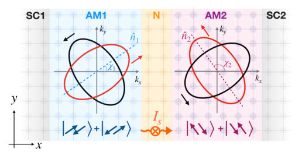
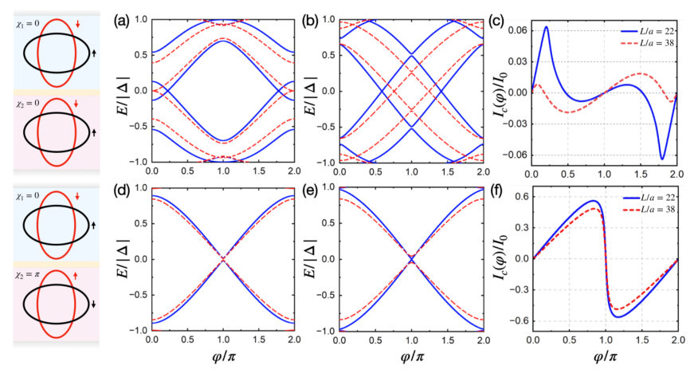
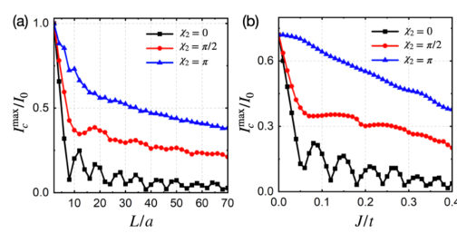
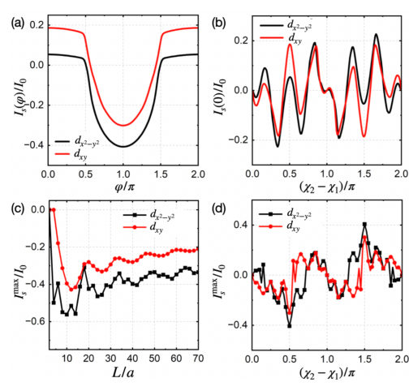
Summary. This paper proposes a way to create a field-free platform for superconducting spintronics using altermagnetic layers. By tuning the orientation of the altermagnetic Neel vectors, one can control the magnitude and polarity of spin-polarized supercurrents and eliminate unwanted 0-pi transitions. This provides a highly tunable mechanism for generating dissipationless spin currents.
Why it may be interesting. not directly relevant
Main problem. The study aims to explore how inhomogeneous altermagnetic interlayers can be used to tailor superconducting spin currents and manipulate 0-pi transitions in Josephson junctions without the need for external magnetic fields.
Main result. The researchers found that a pi-misorientation of Neel vectors in altermagnetic layers suppresses pair-breaking and eliminates 0-pi transitions, while non-collinear alignment generates a tunable, spin-polarized Josephson current.
Method. The study employs a tight-binding model on a 2D lattice and uses the recursive Green's function method combined with the Mobius transformation to calculate the nonlocal part of the Matsubara Green's function.
Model / system. A 2D Josephson junction consisting of two superconducting leads connected by two altermagnetic layers and a normal region (SC1-AM1-N-AM2-SC2), featuring anisotropic spin splitting with d-wave symmetry.
Key observables. Josephson charge current (Ic), spin-polarized Josephson current (Is), and the current-phase relation (CPR).
Important parameters / regimes. Altermagnetic strength (J), misorientation angle between Neel vectors (delta chi), junction length (L), and interface transparency (tint).
Assumptions / limitations. The system assumes translational invariance along the y-direction, a small number of sites for the normal region, and the use of a conventional BCS pairing potential.
Figures summary. Figure 1 provides a schematic of the junction setup, illustrating the spin-band lobes and Neel vectors; Figure 4(d) shows the complex oscillatory behavior of the maximum spin supercurrent as a function of crystal misorientation.
Paper structure. The paper introduces the problem of field-free spintronics, describes the altermagnetic Josephson junction model and Hamiltonian, details the Green's function numerical method, presents results regarding charge and spin currents under different Neel vector orientations, and concludes with experimental implications.
The pursuit of dissipationless spin supercurrents is a central theme in superconducting spintronics. We propose a field-free Josephson junction using an inhomogeneous altermagnetic interlayer with in-plane Néel vectors. We show that the current-phase relation and critical Josephson current is highly sensitive to the misorientation angle between the altermagnetic layers' Néel vectors. Specifically, at a $π$ misorientation with equal layer thicknesses the spatial oscillations of the superconducting pair amplitude, governed by the center-of-mass momentum, undergo mutual cancellation. This compensation suppresses individual layer pair-breaking, significantly enhancing the critical current and eliminating $0$-$π$ transitions. Furthermore, the non-collinear alignment of the Néel vectors facilitates the emergence of a net spin-polarized Josephson current. This spin current serves as a distinct signature of spin-triplet pair correlations, generated by the spin-dependent momentum shifts inherent to the altermagnetic exchange field. Our results establish a highly tunable, field-free platform for the realization of dissipationless spintronic devices.
Authors: Satadeep Bhattacharjee
Type: theory · Category: disordered systems and neural networks · PDF: https://arxiv.org/pdf/2605.01304v1
Analysis basis: full PDF text, analyzed in chunks
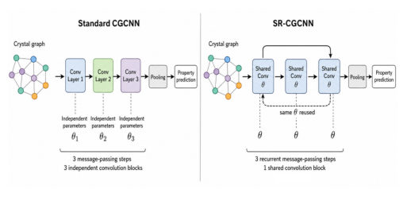
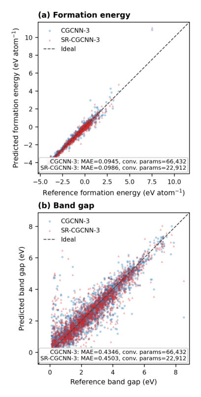
Summary. This paper proposes a more efficient version of Crystal Graph Neural Networks that uses shared weights across recurrent steps. This approach allows for deeper information propagation in crystal structures without a massive increase in the number of trainable parameters. It demonstrates that weight-tying can maintain high predictive accuracy for material properties like band gap and formation energy.
Why it may be interesting. not directly relevant
Main problem. The coupling between message-passing depth and parameter count in Crystal Graph Convolutional Neural Networks (CGCNNs) makes increasing the structural receptive field computationally expensive.
Main result. The proposed SR-CGCNN achieves accuracy comparable to standard CGCNNs while using only 34.5% of the trainable convolutional parameters by using weight-tying across recurrent steps.
Method. The authors introduce a shared-recurrent architecture where the same convolutional weights are applied repeatedly across multiple message-passing steps to decouple depth from parameter count.
Model / system. The model operates on crystalline materials represented as graphs, where atoms are nodes and interatomic distances define edges, using datasets from the Materials Project.
Key observables. Formation energy (eV/atom) and band gap (eV).
Important parameters / regimes. Number of message-passing steps (T) and number of independent convolutional layers (L).
Assumptions / limitations. The primary benefit of deeper networks can be approximated by the repeated application of a single learned local update.
Figures summary. Figure 1 provides a schematic comparison between the architecture of standard stacked CGCNNs and the proposed recurrent SR-CGCNN.
Paper structure. The paper introduces the parameter-depth coupling problem, describes the SR-CGCNN architecture, presents benchmarking results on formation energy and band gap datasets, and discusses limitations and future directions.
Crystal graph neural networks predict materials properties by propagating information through local atomic environments. In conventional crystal graph convolutional neural networks (CGCNNs), this propagation depth is increased by stacking independently parameterized convolutional layers. This coupling between message-passing depth and parameter count raises a simple question: can repeated application of the same learned local update recover most of the benefit of a deeper CGCNN? We address this question by introducing a shared-recurrent CGCNN (SR-CGCNN), in which the main crystal-graph convolutional weights are tied across recurrent message-passing steps. The graph construction, pooling operation, and prediction head are kept unchanged, allowing a controlled comparison with standard CGCNN baselines. On Materials Project-derived formation-energy and band-gap datasets, a three-step SR-CGCNN approaches the accuracy of a standard three-layer CGCNN while using only $34.5\%$ of its trainable convolutional parameters. The formation-energy test mean absolute error changes from $0.0945$ to $0.0986~\mathrm{eV\,atom^{-1}}$, while the band-gap error changes from $0.4346$ to $0.4503~\mathrm{eV}$. These results indicate that repeated shared message passing can provide a parameter-efficient approximation to stacked CGCNN depth, offering a compact recurrent interpretation of crystal graph convolution.
Authors: Annabelle Canestraight, Russell Miller, Libor Veis, Vojtech Vlcek
Type: theory · Category: numerical methods · PDF: https://arxiv.org/pdf/2605.01064v1
Analysis basis: full PDF text, analyzed in chunks
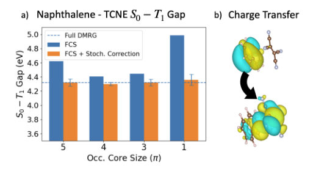
Summary. This paper introduces a stochastic cluster expansion method to calculate excited-state energy gaps in large, strongly correlated molecular systems. By treating a small active space exactly and sampling the rest of the orbital environment stochastically, the method achieves high accuracy with a massive reduction in computational complexity. It demonstrates success on benchmark systems like polyacenes and charge-transfer complexes.
Why it may be interesting. The method provides a scalable way to handle large-scale many-body problems by using stochastic sampling to reduce the effective dimension of the Hilbert space, which is highly relevant for simulating large-scale quantum dynamics and electronic structure.
Main problem. Calculating excited-state electronic structures in strongly correlated systems is difficult due to the exponential scaling of the many-body Hilbert space and the challenge of constructing controlled active spaces.
Main result. The Stochastic Cluster Expansion (SCE) framework successfully extends to excitation gaps, providing accurate singlet-tricept gaps for polyacenes and charge-transfer complexes with a significantly reduced Hamiltonian dimension.
Method. An extension of the stochastic cluster expansion (SCE) that expresses energy differences as a hierarchy of orbital-space cluster contributions, using a minimal frontier chemical subspace (FCS) treated exactly and a stochastic sampling of the remaining orbital environment.
Model / system. Strongly correlated electronic systems, specifically charge-transfer complexes (e.g., Naphthalene-TCNE) and polyacenes (up to heptacene), modeled using many-body Hamiltonians in an orbital-based framework.
Key observables. Excitation gaps, specifically singlet-triplet (S0-T1) energy gaps.
Important parameters / regimes. Number of orbitals in the Frontier Chemical Subspace (FCS), number of stochastic samples (N_zeta), and the cluster expansion order.
Assumptions / limitations. Assumes correlation is sufficiently localized for truncated expansion; assumes the excitation is predominantly captured within the defined FCS; assumes the energy gap is evaluated between states sharing nearly the same eigenvectors across stochastic samplings.
Figures summary. Fig 1 shows gap renormalization vs FCS size for Naphthalene-TCNE; Fig 2 illustrates gap renormalization for Benzene-TCNE, error convergence vs number of samples, and error per electron; Fig 3 compares singlet-triplet gaps across polyacene lengths and compares Hilbert space dimensions.
Paper structure. The paper introduces the problem of excited-state scaling, presents the SCE formalism for energy differences, describes the partitioning into FCS and stochastic rest-space, demonstrates the method on charge-transfer complexes and polyacenes, and discusses error convergence and limitations.
Excited-state electronic structure in strongly correlated systems remains challenging due to the exponential scaling of the many-body Hilbert space and the difficulty of constructing systematically controlled active spaces. Building on the stochastic cluster expansion (SCE) framework previously developed for ground-state correlation energies, we extend the formalism to excitation gaps by expressing energy differences directly as a hierarchy of orbital-space cluster contributions. In this formulation, excitation energies are reconstructed from reduced-rank calculations involving a minimal frontier chemical subspace (FCS), treated exactly, together with stochastic sampling of the remaining orbital environment. This approach eliminates the need for large or chemically preselected active spaces. We demonstrate the method on charge-transfer complexes and polyacenes, where accurate singlet-triplet gaps are obtained that agree with full-system results. The method converges with low-order cluster terms and provides a systematically improvable framework for excited states in correlated systems.
Authors: Sergei S. Sakhonenkov, Aidar U. Gaisin, Anita O. Petrova, Vasilii A. Matveev, Elena O. Filatova
Type: experiment · Category: other · PDF: https://arxiv.org/pdf/2605.02788v1
Analysis basis: full PDF text, analyzed in chunks
Summary. This paper examines how the thickness of Ti/Cu layers affects the growth and structural quality of multilayers. It finds that larger periods promote better crystallinity and regularity, while very thin layers suffer from interdiffusion and loss of periodic contrast.
Why it may be interesting. not directly relevant
Main problem. Investigating how the bilayer period thickness affects the structural evolution, morphology, crystallization, and texture development of Ti/Cu multilayers.
Main result. Increasing the period thickness leads to more regular structures with enhanced crystallization and texture, whereas very small periods (4 nm) exhibit significant intermixing and reduced periodic contrast.
Method. Magnetron sputtering was used for synthesis, followed by characterization using TEM (STEM-HAADF, HRTEM), SAED, XRD, and X-ray reflectometry.
Model / system. Ti/Cu multilayer coatings with periods ranging from 4 nm to 52.5 nm, deposited on Si(111) substrates via magnetron sputtering.
Key observables. Crystallinity, texture, layer roughness, layer waviness, interplanar spacings, and periodic contrast.
Important parameters / regimes. Period thickness (d) from 4 to 52.5 nm, layer thickness (l) from 1.00 to 26.25 nm, and total stack thickness of ~420 nm.
Assumptions / limitations. The study uses periodic multilayers as model objects to separate basic mechanisms from the complexity of aperiodic supermirrors; XRD background was approximated by an exponential function.
Figures summary. Figure 1 shows residual gas composition; Figure 2 shows STEM-HAADF cross-sections; Figure 3 and 5 show SAED and HRTEM for specific periods; Figure 8 shows XRD peak decomposition; Figure 9 shows XRR curves.
Paper structure. The paper introduces the scientific problem of structural evolution, describes the experimental synthesis and characterization setup, presents results for various period thicknesses, analyzes phase evolution and lattice expansion, and concludes with a discussion on growth-induced instabilities.
Ti/Cu multilayers with periods ranging from 4 to 52.5 nm were synthesized by magnetron sputtering to examine how the period thickness affects morphology, crystallization, texture development, and preservation of periodicity. The structural evolution was analyzed using complementary transmission electron microscopy techniques with X-ray diffraction and reflectometry. The results show that the period thickness governs the balance between interfacial transition-region formation, crystallization, and growth-induced morphological instabilities. At the smallest period of 4 nm, the structure has strongly reduced periodic contrast, which may be attributed to extended interfacial regions, partial Cu-Ti intermixing, and suppression of well-defined layer formation. At 10 nm, the multilayer structure is preserved but remains affected by accumulated roughness and layer waviness; local modification of the Cu lattice is suggested to be significant relative to the bilayer period, likely due to mixed Cu-Ti interfacial regions and/or coherent strain. With increasing period, the multilayers become more regular, and the layers show progressive crystallization and texture development during growth. Cu crystallizes predominantly in the fcc structure with a strong Cu(111) contribution, whereas Ti exhibits a more complex structural evolution, from an amorphous or weakly crystallized state near the substrate toward a more ordered and textured state closer to the surface.
Authors: Md Adnan Mahathir Munshi, Abdul Aziz Shuvo, Mike Kotschenreuther, Adri C. T. van Duin, Bladimir Ramos-Alvarado
Type: both · Category: other · PDF: https://arxiv.org/pdf/2605.01863v1
Analysis basis: full PDF text, analyzed in chunks
Summary. This paper uses reactive molecular dynamics to show that oxygen and hydrogen can be used to engineer the surfaces of liquid metal alloys for nuclear fusion. By driving low-Z elements to the surface, these impurities create a protective layer that reduces sputtering while maintaining a stable high-Z bulk. This provides a predictive method for designing self-healing materials for extreme fusion environments.
Why it may be interesting. not directly relevant
Main problem. The study addresses the challenge of designing liquid metal plasma-facing components (PFCs) for fusion reactors that can handle extreme heat while minimizing sputtering. Specifically, it investigates how non-metal species (O and H) drive the surface segregation of low-Z elements (Al, Li) to create self-adaptive, low-sputtering surfaces.
Main result. The researchers demonstrate that oxygen and hydrogen induce strong surface segregation of Al and Li in Sn-based alloys, with the simultaneous presence of O and H producing the most pronounced segregation. They established a mechanistic link between non-metal chemistry and interfacial structure, providing a predictive framework for alloy design.
Method. The study uses Reactive Molecular Dynamics (MD) with a newly developed and validated ReaxFF reactive force field. The simulations involve high-temperature ramping and the introduction of reactive species to observe compositional evolution.
Model / system. The physical system consists of liquid metal alloy slabs (Sn-Al and Sn-Li) with free surfaces, exposed to oxygen (O) and hydrogen (H) radicals. The model uses a slab-based nanostructure with periodic boundary conditions and vacuum layers to simulate the interface.
Key observables. Probability density functions (PDFs), local atomic composition profiles, radial distribution functions (RDF), and a new overlap-based segregation index (S) to quantify species separation.
Important parameters / regimes. Temperatures ranging from 300 K to 1300 K; alloy compositions including Sn-Al (7.4 wt% Al) and Sn-Li (9, 20, and 26 at% Li); presence of O and H radicals.
Assumptions / limitations. The diamond-cubic starting lattice is assumed to be a neutral starting point as high-temperature ramping removes structural memory; the ReaxFF potential is assumed to be accurate for the studied condensed-phase configurations.
Figures summary. Figure 1 shows the slab nanostructure topology; Figure 2 details the ReaxFF workflow; Figures 3-5 show PDFs and snapshots for Sn-Al systems; Figures 6-12 show depth profiles and snapshots for Sn-Li systems under various O and H exposures; Figure 13 shows temperature-dependent profiles.
Paper structure. The paper begins with the development and validation of the ReaxFF potential, followed by the investigation of binary Sn-Al and Sn-Li alloys, then explores the effects of oxygen, hydrogen, and their synergistic combination on surface segregation, concluding with a unified view of segregation regimes.
Engineering liquid metal alloys offers a transformative pathway for plasma-facing components (PFC) by enabling chemically tailored surfaces that can simultaneously optimize plasma-material interactions, reduce divertor heat flux, and enhance core plasma confinement, thereby advancing the commercial viability of nuclear fusion power plants. This study, employing an atomistic simulation framework, provides direct evidence that incorporating non-metal surface-active agents (such as O and H, or their combination) enables strong surface segregation. This capability makes tin-aluminum (Sn-Al) and tin-lithium (Sn-Li) alloys, with suitable compositions, good candidates for PFC applications. Specifically, the presence of low-Z solutes (Li, Al) leads to preferential surface enrichment, which imparts low-Z sputtering characteristics, while the Sn solvent maintains thermophysical stability. To systematically examine this behavior, we first optimized ReaxFF parameter sets for Sn-Al, Sn-Al-O, Sn-Li, Sn-Li-O, Sn-Li-H, and Sn-Li-O-H systems. We validated them using formation energies and elastic constants. We then employed reactive molecular dynamics simulations to resolve the coupled effects of surface segregation and impurity-driven chemistry at fusion-relevant temperatures. We also introduced an overlap-based segregation index that captures interfacial compositional separation directly from atomistic density distributions. This metric reveals a clear hierarchy of segregation regimes across all systems and presents a unified view of segregation across all observations reported herein. Together, these findings establish a mechanistic link between non-metal chemistry and interfacial structure, providing a predictive framework for designing self-adaptive, low-sputtering liquid metal alloys for fusion applications.
Authors: Subhadeep Chakraborty, Aabir Mukhopadhyay, Udit Khanna, Sourin Das
Type: theory · Category: quantum information and computing · PDF: https://arxiv.org/pdf/2605.02095v1
Analysis basis: full PDF text, analyzed in chunks
Summary. This paper explores the topological properties of three-terminal Josephson junctions, revealing a hierarchy of Chern and dipolar phases. It shows that at specific chiral points, synthetic flat bands emerge that suppress Josephson currents and create a 'sweet plateau' of phase insensitivity. This discovery provides a blueprint for a new class of Andreev qubits that are intrinsically protected against phase-bias noise.
Why it may be interesting. It presents a novel paradigm for quantum information protection by moving from local 'sweet spots' to global 'sweet plateaus' using intrinsic Hamiltonian symmetries, which is highly relevant for the development of noise-resilient superconducting quantum architectures.
Main problem. The paper addresses the challenge of mitigating dephasing and decoherence in superconducting qubits caused by fluctuations in superconducting phase biases.
Main result. The authors demonstrate that breaking time-reversal symmetry in a three-terminal Josephson junction creates synthetic flat bands that provide a 'sweet plateau' of phase insensitivity, enabling a robust architecture for symmetry-protected Andreev qubits.
Method. The study uses an analytical approach involving the Bogoliubov-de Gennes (BdG) spectrum, Berry curvature integration for Chern numbers, and Wilson loops for dipole polarization, supplemented by numerical simulations of transconductance and density of states.
Model / system. A three-terminal Josephson junction (3-TJJ) realized with semiconducting nanowires and proximity-induced s-wave superconductivity, modeled using a scattering matrix approach in a synthetic Brillouin zone defined by superconducting phase differences.
Key observables. Chern numbers, dipole polarization, time-averaged transconductance, Berry curvature, and Andreev bound state (ABS) energy spectrum.
Important parameters / regimes. The scattering parameter zeta, superconducting phase biases (phi2, phi3), chirality parameter delta_G, and the chiral points (zeta = 2pi/3, 4pi/3).
Assumptions / limitations. The study assumes the short-junction limit for determining Andreev bound state energies.
Figures summary. Figures show Berry curvature contours, dipole polarization magnitude, and the identification of the dipolar phase; plots of time-averaged conductance and the gradient of ABS energy; and a comprehensive phase diagram mapping gap closings and topological transitions.
Paper structure. The paper introduces the 3-TJJ system, analyzes the hierarchical topology (Chern vs. dipolar) of the BdG spectrum, demonstrates the emergence of synthetic flat bands at chiral points, explores the resulting quantized transconductance, and concludes with implications for robust qubit architectures.
We uncover hierarchy of topological phases within the synthetic Brillouin zone of a three-terminal Josephson junction's (3-TJJ's) Bogoliubov-de Gennes spectrum. We demonstrate that the above-gap continuum realizes a Chern insulator phase with quantized monopole charges (\pm 1), while the subgap Andreev bound states (ABS) are characterized by a quantized dipolar invariant. By breaking time-reversal symmetry at the junction, we induce synthetic flat bands that suppress DC Josephson currents across the entire phase-bias space. Furthermore, under voltage bias, the junction exhibits a robust quantization of the time-averaged transconductance that is reminiscent of a quantized Hall conductance plateau owing to the flat band limit and its dipole phase. As a byproduct, the flat band produces a global "sweet plateau" of phase insensitivity, surpassing localized sweet spots of conventional superconducting qubits and enabling a robust architecture for symmetry-protected Andreev qubits.
Authors: R. Weht, A. A. Aligia, M. Nunez-Regueiro
Type: theory · Category: strongly correlated electrons · PDF: https://arxiv.org/pdf/2605.01115v1
Analysis basis: full PDF text, analyzed in chunks
Summary. The paper demonstrates that reversing the stacking order in rhombohedral graphite creates a unique interface hosting four topological flat bands. This discovery provides a theoretical mechanism for stable, high-density electronic states that could potentially host superconductivity.
Why it may be interesting. not directly relevant
Main problem. Investigating the emergence of topological flat bands at the interface of inverted rhombohedral graphite stacking (ABC to CBA) and their potential link to high-Tc superconductivity.
Main result. The study finds that inverting the rhombohedral stacking order creates four robust topological flat bands at the interface, with charge density concentrated at the inversion layer.
Method. First-principles Density Functional Theory (DFT) using VASP and a tight-binding model mapped onto a Su-Schrieffer-Heeger (SSH) chain.
Model / system. Various graphite stacking configurations, specifically focusing on the interface between ABC and CBA rhombohedral sequences, modeled via a 1D SSH-like chain Hamiltonian.
Key observables. Energy bands, density of states (DOS), and charge density distribution.
Important parameters / regimes. Interlayer separations (3.25-3.53 A), K and K' points of the Brillouin zone, and the topological condition |qa| < sqrt(2/3) |tz/t|.
Assumptions / limitations. The system is modeled using nearest-neighbor intralayer and interlayer hopping; the SSH mapping is used for physical interpretation.
Figures summary. Fig 1 shows flat bands in an ABC slab; Fig 2 shows charge localization in Bernal/rhombohedral interfaces; Fig 3 shows four flat bands in the inverted ABC/CBA interface; Fig 4 illustrates the stacking inversion structure.
Paper structure. The paper begins by investigating rhombohedral slabs, moves to Bernal/rhombohedral interfaces, then presents the central result of inverted rhombohedral interfaces, supported by an SSH model mapping.
Motivated by the indications of high-Tc superconductivity in natural graphite enriched in the rhombohedral phase, we study the band structure of several stacking configurations that combine two of the three graphite structures as well as modifications of the rhombohedral sequence (from ABCABC... to CBACBA...), using first-principles calculations. We focus in particular on the possible emergence of flat bands near the Fermi level. When the two different rhombohedral orderings are combined, flat bands of topological origin emerge at the interface between the two domains, near the K and K' points of the Brillouin zone. Mapping a simple tight-binding model of a rhombohedral slab along the direction perpendicular to the graphene layers onto a Su-Schrieffer-Heeger chain provides a transparent understanding of the underlying physics.
Authors: Eliza Wieman, Nejc Nagelj, Ethan Curling, Larry Chen, Jin Yu, A. Paul Alivisatos, Aaron Lindenberg, Benjamin T. Diroll, Jacob H. Olshansky, Jihong Ma, Burak Guzelturk, Benjamin L. Cotts
Type: experiment · Category: other · PDF: https://arxiv.org/pdf/2605.01141v1
Analysis basis: full PDF text, analyzed in chunks
Summary. This paper presents a contact-free method using time-resolved X-ray diffraction to track how heat moves through quantum dot thin films. It discovers that heat dissipates much more slowly in solid films than in liquids, highlighting a significant bottleneck for thermal management in future optoelectronic devices.
Why it may be interesting. not directly relevant
Main problem. The thermal properties and heat dissipation dynamics of colloidal quantum dot (QD) thin films are poorly understood compared to their electronic properties, which is critical for preventing device degradation.
Main result. The study reveals a massive four-order-of-magnitude difference in thermal relaxation timescales between liquid dispersions (~180 ps) and solid thin films (~2.3 us), with the thin-film thermal conductivity found to be as low as 0.55 W m^-1 K^-1.
Method. Time-resolved X-ray diffraction (TR-XRD) using GIWAXS and WAXS geometries to monitor changes in Bragg peak intensities (Debye-Waller Factors) following pulsed optical excitation.
Model / system. The physical system consists of CdSe/CdS core/shell quantum dots in two environments: close-packed thin films on fused silica and liquid dispersions in dodecane. Thermal transport is modeled using 1D transient heat transfer and Finite Element Modeling (FEM).
Key observables. Bragg peak positions (lattice expansion), Bragg peak intensities (Debye-Waller Factors), and amplified spontaneous emission (ASE) spectra.
Important parameters / regimes. Thermal conductivity (0.55 W m^-1 K^-1), interfacial thermal conductance (~15 MW m^-2 K^-1), thermal relaxation lifetimes (ps to us scales), and excitation fluence.
Assumptions / limitations. The analytical model assumes a semi-infinite slab and full conversion of laser energy to heat; the FEM model is used when thermal penetration depth exceeds film thickness.
Figures summary. Figure 2 shows ASE spectra indicating optical gain; Figure 3 displays 2D diffraction images and intensity changes; Figure 5 shows simulations of depth-averaged temperature evolution and comparison between experimental data and FEM/analytical models.
Paper structure. The paper introduces the problem of thermal management in QDs, describes the TR-XRD experimental setup and the QD systems used, presents the validation of the device-like environment via optical gain, details the extraction of thermal parameters via DWF and FEM, and concludes with the comparison of liquid vs. solid-state dynamics.
Colloidal quantum dots (QDs) and their thin-films are increasingly used in electronic and photonic devices replacing traditional bulk semiconductors. However, thermal properties of the QDs are comparatively underexplored relative to device development efforts. This study shows the use of time-resolved X-ray diffraction as a contact-free method to probe the thermal response of QDs in device-like environments, providing in-situ insights for future thermal management strategies. Through the extraction of Debye-Waller Factors on a sub-nanosecond timescale, we use time-resolved X-ray diffraction to directly capture the heating and cooling of core/shell CdSe/CdS QDs following pulsed optical excitation. In a QD thin-film that actively provides optical gain, the thermal conductivity is found to be as low as 0.55 $\mathrm{W\,m^{-1}\,K^{-1}}$, because of the poor heat flow within close-packed QD solids. For QDs dispersed in liquids, interfacial thermal conductance is found to dominate the thermal relaxation with a conductance on the order of 15 $\mathrm{MW\,m^{-2}\,K^{-1}}$.
Authors: Lifen Shi, Keyuan Ma, Binbin Ruan, Zhen Wang, Pengtao Yang, Zhian Ren, Jianping Sun, Gang Li, Fabian O. von Rohr, Bosen Wang, Jinguang Cheng
Type: both · Category: strongly correlated electrons · PDF: https://arxiv.org/pdf/2605.01893v1
Analysis basis: full PDF text, analyzed in chunks
Summary. This paper explores how high pressure can tune the superconducting properties of Ti4Co2O, revealing two distinct phases. It demonstrates that the superconducting transition temperature changes non-monotonically because pressure shifts the electronic density of states. This work provides insight into how external stimuli can control superconductivity in materials with strong electron correlations.
Why it may be interesting. not directly relevant
Main problem. Investigating the pressure-induced evolution of superconductivity and the origin of the non-monotonic behavior of Tc and Bc2(0) in the Ti4Co2O superconductor.
Main result. The study identifies two distinct superconducting regimes (SC1 and SC2) driven by electronic reconstruction, where Tc shows a non-monotonic dependence due to the shifting density of states relative to the Fermi level.
Method. High-pressure electrical transport and magnetic susceptibility measurements using piston-cylinder and diamond anvil cells, combined with synchrotron X-ray diffraction and DFT calculations.
Model / system. The physical system is the single-crystal eta-carbide type superconductor Ti4Co2O, which possesses a cubic structure (space group Fd-3m) and exhibits strong electron correlations with weak spin-orbit coupling.
Key observables. Superconducting transition temperature (Tc), upper critical field (Bc2(0)), resistivity exponent (n), density of states at Fermi level (N(Ef)), and bulk modulus.
Important parameters / regimes. Low-pressure phase (P < 12.3 GPa), high-pressure phase (P > 20.5 GPa), Pauli paramagnetic limit (BpBCS), and pressure coefficient (dTc/dP).
Assumptions / limitations. The non-monotonic Tc is attributed to the evolution of the density of states under compression, assuming the structural integrity of the lattice up to 55.8 GPa.
Figures summary. The figures likely illustrate the pressure dependence of Tc and Bc2(0), the evolution of the resistivity exponent n, and the density of states (DOS) calculated via DFT.
Paper structure. The paper introduces the material context, describes the experimental high-pressure setup, presents the transport and structural results, analyzes the two superconducting regimes through transport exponents and DOS, and concludes with the implications for electron-phonon coupling.
We report on the pressure dependence of superconducting transition temperature Tc and upper critical field Bc2(0) through electrical transport of the Ti4Co2O superconductor (eg.,the superconducting transition temperature Tc = 2.5 K and the Bc2(0)=7.2T=2.9Tc). We find that the Tc exhibits non-monotonic pressure dependence:it rises monotonically at first with a pressure coefficient of dTc/dP=0.034 K/GPa, but rapidly decreases around 10-20 GPa, and then increases with the dTc/dP = 0.023 K/GPa, up to= 4.31 K at 69.7 GPa. Concurrently, the Bc2(0)exhibits a dome shaped pressure dependence, with its maximum at 5 GPa of almost twice the value at ambient pressure, exceeding the weak-coupling Pauli paramagnetic limit Bp throughout the whole pressure range. By comparing the normal-state and superconducting properties, we identify two distinct superconducting regimes, with a low-pressure superconducting phase characterized by an enhanced Bc2(0)values and Fermi-liquid normal-state electrical transport (the exponent n = 2), and a high-pressure superconducting phase with a monotonically increased Tc and an enhancement in phonon scatterings (the exponent n = 4). Room-temperature synchrotron X-ray diffraction indicates that there is no structural transition up to 55.8 GPa, which gives a relatively large bulk modulus of 192 GPa in comparison with other alloy superconductors. First-principles calculations suggest that the nonmonotonic Tc maybe closely related to the evolution of the density of states of Ti4Co2O upon compression, which is different from those of isostructural superconductors Ti4Ir2O and Nb4Rh2C. Our results show that even in the Ti4Co2O with weak spin-orbit coupling, superconductivity remains highly sensitive to the external stimuli such as pressure.
← Index · ← Previous · Next →